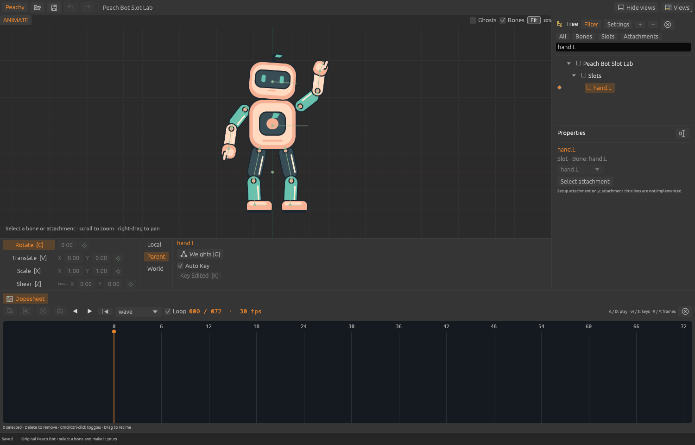
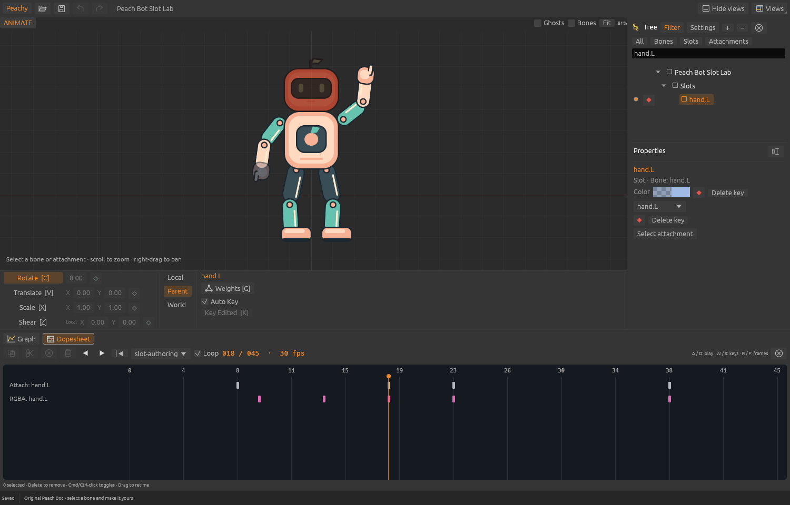
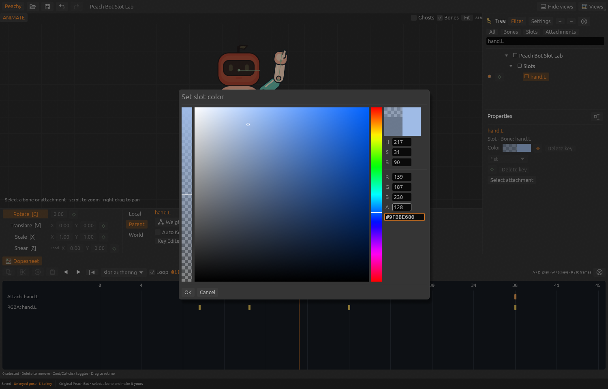

Slot authoring · Before and after
Inspection: rendered native captures and actual mouse/key input. The after view demonstrates the newly authored frame; poses and frame positions differ.




November 14, 2026 · Actual native captures at 1500×960, original Peach Bot artwork only. Select any image for the full-size PNG.
Installed Spine 4.3.26 establishes the slot key placement, Color dialog, Attach/RGBA rows and four percentage-value curves. Its screenshots remain private. These images show independently implemented Peachy controls.
Inspection: rendered native captures and actual mouse/key input. The after view demonstrates the newly authored frame; poses and frame positions differ.


Inspection: actual Alpha 128.9 entry yields128. Cancel restores the entire starting document, pending state and history. With Auto Key off, OK creates a pending color; Save excludes it. Global K keys pending color and attachment together in one undo step.

Inspection: actual tangent drag, whole-document one-step Undo/Redo, 80% numeric handle entry, numeric Escape, held-gesture cancellation, keyboard clipboard/Delete and fresh-process persistence. Editing R preserves G/B/A curves, all key bytes and exact times.

| Level | Evidence | Limit |
|---|---|---|
| Shared core and shell | Focused engine, native-event UI, adapter and actual MCP stdio checks; formatting, Clippy, build and architecture pass with two workers. | Filters overlap; no additive full-suite or hosted-CI pass is claimed. |
| Installed editor | 16 original cases establish104 measured split parameters, including a held-out nonzero-origin interval. Known same-slot clipboard paste succeeds; missing-name target paste leaves all exported data unchanged. | Extreme-time fallback and every skin/name combination are not native-calibrated. Byte sampling can differ at half-byte ties. |
| Actual MCP | 45 strict commands / 11 tools; real swaps/fades, mixed typed copying, retime, curve-preserving insertion, atomic history, raw hidden-slot samples and Save/reopen/export. 15 source hashes remain unchanged. | Independent headless session; no live desktop bridge. |
| External runtime | Both final authored outputs agree across three clips/all three skins: 42,120 bone values, 49,032 region values and 24,516 color values; max region error 0.00003052 at 0.001 geometry tolerance. | Finite samples, not pixel equivalence or all-feature compatibility. |
| Remaining authoring | Selected-slot RGBA and attachment authoring is implemented. | Separate RGB/alpha, dark tint, full Color targets, all-owner/mixed Graph, sliders and complete docking/styling remain. A default-attachment name-override interchange gap is recorded separately. |
Scalar evidence · Contract and limitations · MCP usage · Official-update backlog